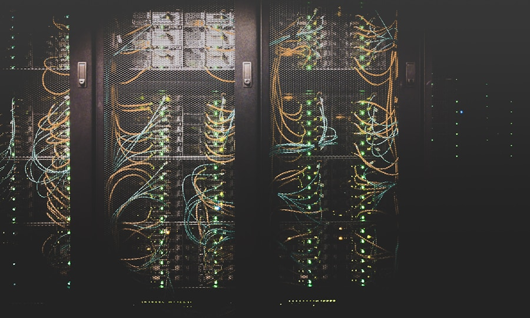

Senior High School
2021 — 2025- Grade 11 Honors (2022)
- Graduated with Honors (2025)
I'm Lamuel Christopher O. Reyes, an IT graduate with a passion for networking, Python programming, and creative media production. Based in Caloocan City, Philippines.
About
Born on March 23, 2005, I am the middle child of four siblings. I am known for being kind, generous, and personable — with a competitive spirit and a proactive approach to everything I take on.
My interest in technology started with computer hardware and grew into networking, programming, and creative media production. I believe in building real skills, not just collecting credentials — though I have collected a few of those too.
Outside of tech, I carry a strong athletic drive and thrive in team environments where effort and discipline produce results.
My Work
A growing collection of projects and practical tools. This is where every build gets a proper home — from mobile communication prototypes to useful local web applications.
Each new project can be added here with its own image, description, tools, and link.
Background
Pru Life UK – Ortigas
Experienced in social media marketing and paperwork management, achieving strong social connections and measurable growth in online engagement.
Certifications & Awards
Digital Startup Development & Acceleration Program (DSDAP) Caravan
IP 101: Webinar on Basic Intellectual Property — Cisco
Getting Started with Cisco Packet Tracer — Cisco
Learning Arduino: Foundations — Cisco
IT Specialist in Python — Certiport
CCNA: Introduction to Networks — Cisco
Cisco Certified Support Technician Networking
Toolkit & Certifications
Featured certifications

Cisco Networking Academy certification covering networking fundamentals, IP addressing, routing, switching, and network troubleshooting concepts.
View certificateCertiport Information Technology Specialist certification validating proficiency in Python programming, data structures, and software development fundamentals.
View certificateCisco credential covering network support, device configuration, basic troubleshooting, and network infrastructure management.
View certificateContact
Whether you have an opportunity, a project, or just want to talk tech — I'm always happy to hear from you.